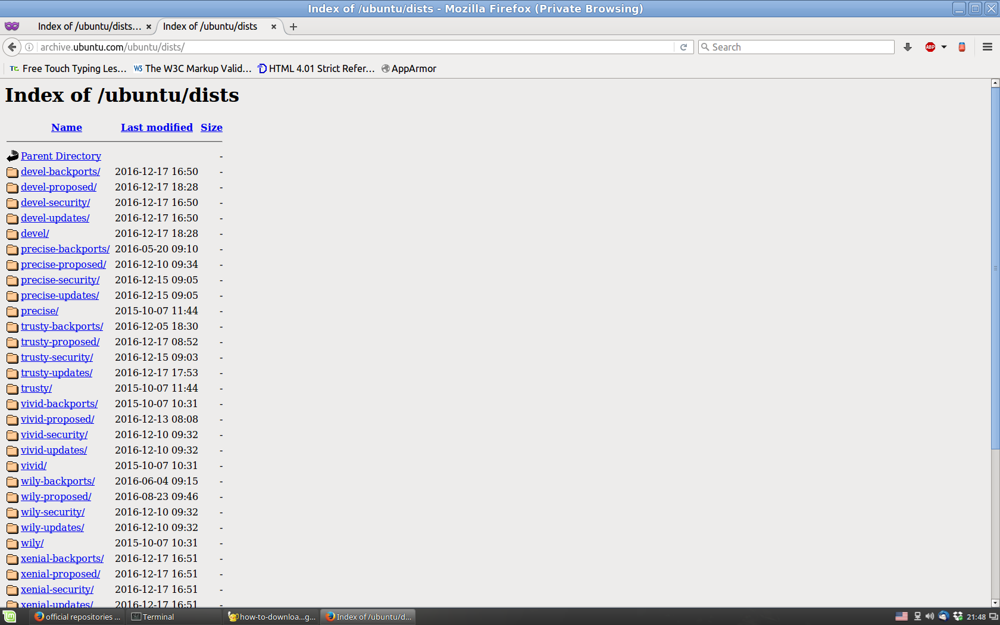
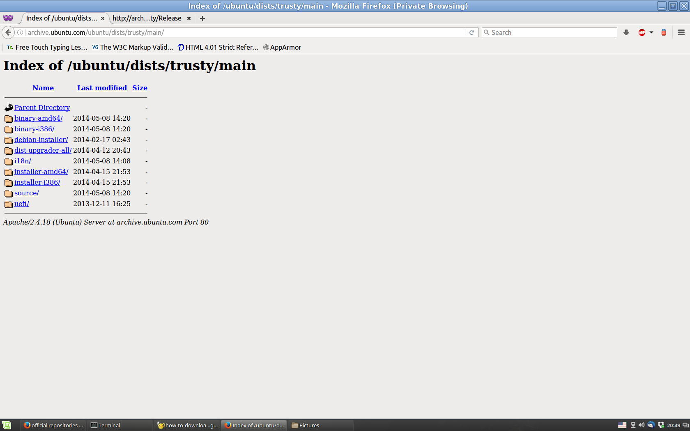
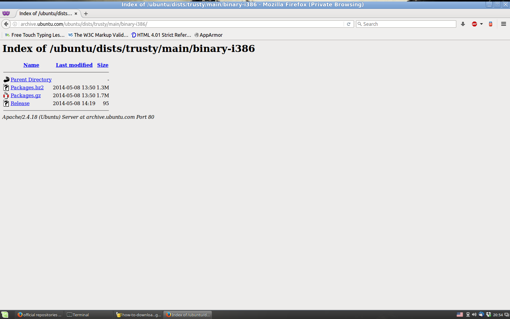

Есть ли идеальный способ создания собственного репозитория ПО для использования в режиме off-line? Наверное, нет. Каждый способ имеет свои достоинства и недостатки. Попробуем разобраться с ними:
Использование apt-get для скачивания всех-всех пакетов.
Нам поможет опция --download-only. Т.о. все, что нужно сделать - пробежаться по списку
всех доступных пакетов и для каждого из них выполнить sudo apt-get --download-only install ...
Достоинства такого подхода: все получается естественным путем, проверяются контрольные суммы и т.д.
Основной же недостаток состоит в том, что apt-get "видит" только пакеты, соответсвующие архитектуре системы, на
которой он запущен. Т.е. если скачивание производится из 32-битного дистрибутива, то в будут доступны для скачивания
только пакеты для архитектуры x86. Кроме того, множество маленьких файлов скачиваются медленнее, чем
несколько больших файлов из-за накладных расходов на поиск и "вычленение" каждого пакета из их великого
множества. Особенно интересный вопрос - возможные несоответствия, которые могут возникнуть во время
скачивания. Например, мы уже скачали пакет А, затем он обновился в репозитории, заодно обновился
пакет Б, который нам еще предстоит скачать и который зависит от А. Затем мы скачали
обновившийся в репозитории Б. Будут ли А и Б
ли они "стыковаться" друг с другом (ведь у нас на локальном диске находится устаревшая версия А)
С вероятностью 99% - будут. Потому что мажорные версии пакетов выходят не так уж
часто, с сохранением обратной совместимости. Т.е. разработчики Б используют обычно только проверенную
временем функциональность А. И нечасто несколько пакетов одновременно обновляются в репозитории.
Вполне возможно, что для всех вышеперечисленых подход существуют скрипты и даже программы, которые делают все сами. Но мы сделаем вид, что ничего подобного нет. И изобретем очередной велосипед. Кроме того, LinuxMint требует особого подхода, поскольку использует, кроме репозиториев Ubuntu, собственные репозитории.
Перво-наперво, узнаем кодовое имя релиза. Например, так:
david@athlonx2 / $ cat /etc/*release DISTRIB_ID=LinuxMint DISTRIB_RELEASE=17.1 DISTRIB_CODENAME=rebecca DISTRIB_DESCRIPTION="Linux Mint 17.1 Rebecca" NAME="Ubuntu" VERSION="14.04.5 LTS, Trusty Tahr" ID=ubuntu ID_LIKE=debian PRETTY_NAME="Ubuntu 14.04.5 LTS" VERSION_ID="14.04" ...Т.о. кодовое имя релиза - Trusty Tahr, или просто Trusty. Посмотрим на содержимое архива ПО Ubuntu с "высоты птичьего полета" и увидим картину, изображенную на рисунке 1.1. Рисунок 1.1 - Архив Ubuntu релиза Trusty Tahr  Назначение выделенных каталогов уже описано в документации по Ubuntu. Приведем здесь краткую выдержку, сделанную методом copy-and-paste:
... FILE LOCATION bin/afio multiverse/utils/afio bin/ash universe/shells/ash bin/autopartition admin/ubiquity bin/autopartition-crypto admin/ubiquity bin/autopartition-loop admin/ubiquity bin/autopartition-lvm admin/ubiquity bin/bash shells/bash bin/bash-static universe/shells/bash-static bin/block-attr admin/ubiquity bin/blockdev-keygen admin/ubiquity bin/blockdev-wipe admin/ubiquity ...Т.е. все файлы перечислены в алфавитном порядке. В целом, это очень полезный список, т.к. имея такой список под рукой, достаточно запустить grep для определения соответствующего файлу пакета (о чем собственно и сказано в комментарии в начале файла). Так что однозначно будем скачивать эти списки. 2) Файл Release поинтереснее. Он содержит контрольные суммы для архивов ПО. Вот фрагмент файла:
... MD5Sum: ead1cbf42ed119c50bf3aab28b5b6351 8234934 main/binary-amd64/Packages 52d605b4217be64f461751f233dd9a8f 96 main/binary-amd64/Release 4c2ecc07c5b3859ee08bd41f788a5a79 1743009 main/binary-amd64/Packages.gz eb5ec6102dfe1dd632fda76e55a33f07 1350329 main/binary-amd64/Packages.bz2 2f6aba238097579bbb4fe92e5bfa0858 7558784 main/binary-arm64/Packages 5c1efe41ea46ec1a7505c8ed0e93a10d 96 main/binary-arm64/Release ...Очень полезный файл. Понадобится в будущем для сверки контрольных сумм. Сверка не гарантирует на 100%, что скачанные архивы целые-невредимые, потому что сами контрольные суммы лежат в одном каталоге с архивами, и к тому же, как и архивы, могут быть скачаны только по протоколу HTTP! Хотя вряд ли произойдет "согласованное" искажение архивов и контрольных сумм, да и нехорошему "человеку посередине" будет не так уж просто устроить подмену и того, и другого, так что можно полагаться на эти суммы на 99%. 3) Release.gpg - файл содержит цифровую подпись - все понятно. Обязательно проверим. 4) main, multiverse, restricted, restricted - о них сказано во все той же документации по Ubuntu. Скопипастим немножко: main - свободное ПО, официально поддерживаемое компанией Canonical. restricted - проприетарное ПО (в основном - драйверы устройств), официально поддерживаемое компанией Canonical. universe - свободное ПО, официально не поддерживаемое компанией Canonical (но поддерживаемое сообществом пользователей). multiverse - проприетарное ПО, не поддерживаемое компанией Canonical. Берем все-все-все! ---------------- Заглянем в каталог main. И увидим кучу файлов, приведенную на рисунке ...  Тут более-менее все ясно: каталоги соответсвуют различным архитектурам, другие имеют отношение к интернационалиции и локализации, исходным кодам и т.д. и т.п. В принципе, если зайти в каталог binary-i386 к примеру, то увидим одни лишь файлы. Вот их и будем скачивать.  ------------------------------- Пишем скрипт, который все автоматизирует (часть 2)
В Linux Mint Cinnamon в качестве файлового менеджера по-умолчанию установлен Nemo. По-моему, это очень хорошая программа: быстрая и в меру функциальная. Но есть в ней один недостаток: Nemo всегда отображает несмонтированные диски [1]. часть 2.
__________
↑ Слово "диск" не совсем уместно. Правильнее было бы сказать "том". Том объединить в том с помощью LVM.
↑ Я так и не разобрался, что все это значит: udisks, GVfs,